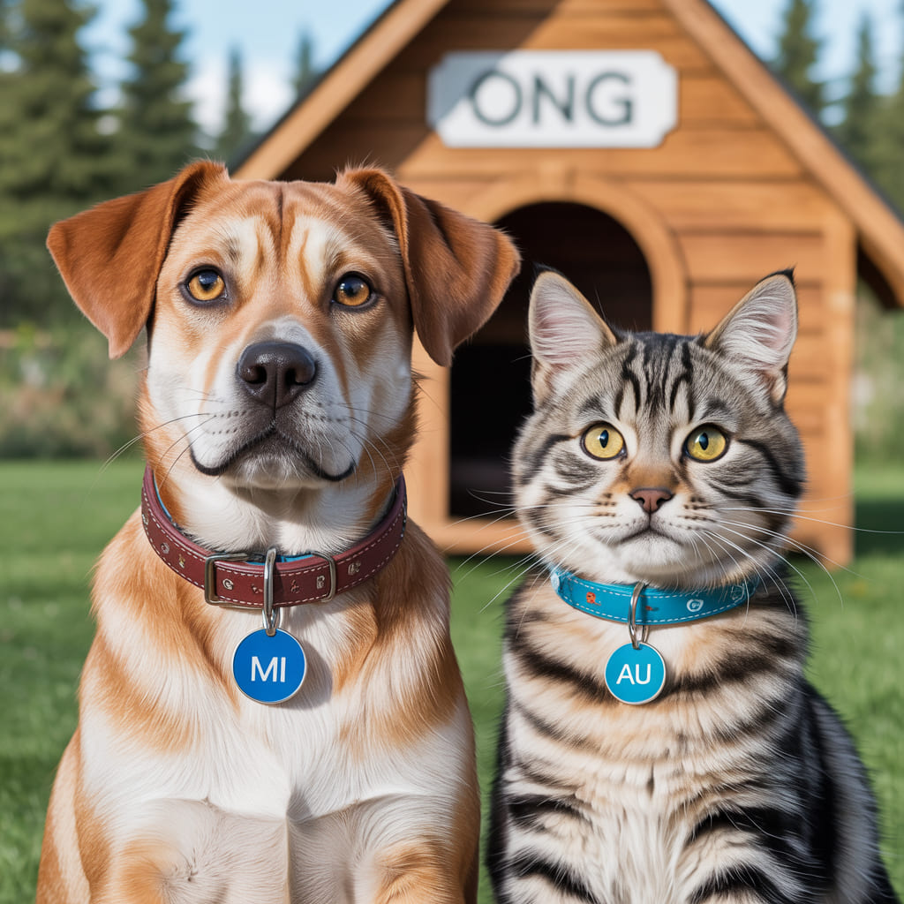

Campanha Controle Populacional de Cães e Gatos de castração, com preços reduzidos.
Não existe mais desculpa para não castrar seu peludinho!
Machos e Fêmeas a partir de 3 meses podem e devem ser castrados.
A castração antes dos 6 meses propicia maiores benefícios à saúde e bem-estar do animal.

Amor: substantivo masculino - Sentimento de afeição intensa que leva alguém a querer o que, segundo ela, é bonito, digno, esplendoroso.